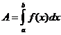

MATHS :: Lecture 10 :: INTEGRATION

INTEGRATION
Integration is a process, which is a inverse of differentiation. As the symbol represents differentiation with respect to x, the symbol stands for integration with respect to x.
Definition
If then f(x) is called the integral of F(x) denoted by . This can be read it as integral of F(x) with respect to x is f(x) + c where c is an arbitrary constant. The integral is known as Indefinite integral and the function F(x) as integrand.
Integration by parts Examples I
Integration by parts Examples II
Integration by parts Examples III
Formula on integration
1). +c ( n ¹-1)
2). +c
3). = x+c
4). +c
5). dx = ex +c
6).
7).
8). = c x + d
9). +c
10). +c
11). +c
12). +c
13).
14).
13). +c
14). +c
15). +c
16).
Definite integral
If f(x) is indefinite integral of F(x) with respect to x then the Integral is called definite integral of F(x) with respect to x from x = a to x = b. Here a is called the Lower limit and b is called the Upper limit of the integral.
 = = f(Upper limit ) - f(Lower limit)
= = f(Upper limit ) - f(Lower limit)
= f(b) - f(a)
Note
While evaluating a definite integral no constant of integration is to be added. That is a definite integral has a definite value.
Method of substitution
Method –1
Formulae for the functions involving (ax + b)
Consider the integral
I = -------------(1)
Where a and b are constants
Put a x + b = y
Differentiating with respect to x
a dx + 0 = dy
Substituting in (1)
I = +c
=+c
= +c
+c
=+ c
Similarly this method can be applied for other formulae also.
Method II
Integrals of the functions of the form

put =y,
Substituting we get
I = and this can be integrated.
Method –III
Integrals of function of the type
when n ¹ -1, put f(x) = y then
\  =
=
=
=
when n= -1, the integral reduces to
putting y = f(x) then dy = f1(x) dx
\=log f(x)
Method IV
Method of Partial Fractions
Integrals of the form
Case.1
If denominator can be factorized into linear factors then we write the integrand as
the sum or difference of two linear factors of the form
Case-2
In the given integral the denominator ax2 + bx + c can not be factorized into linear factors, then express ax2 + bx + c as the sum or difference of two perfect squares and then apply the formulae
Integrals of the form
Write denominator as the sum or difference of two perfect squares
 =
= or
or  or
or
and then apply the formula
= log(x+
= log(x+
 =
=
Integration by parts
If the given integral is of the form  then this can not be solved by any of techniques studied so far. To solve this integral we first take the product rule on differentiation
then this can not be solved by any of techniques studied so far. To solve this integral we first take the product rule on differentiation
 =u +v
=u +v
Integrating both sides we get
 dx= ( u
dx= ( u +v
+v  )dx
)dx
then we have u v= +
+
re arranging the terms we get
= uv- This formula is known as integration by parts formula
This formula is known as integration by parts formula
Select the functions u and dv appropriately in such a way that integral can be more easily integrable than the given integral
Application of integration
The area bounded by the function y=f(x), x=axis and the ordinates at x=a x=b is given by 
| Download this lecture as PDF here |